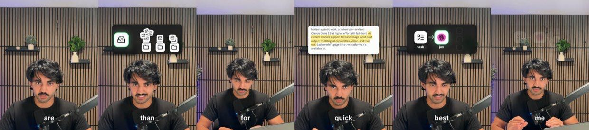
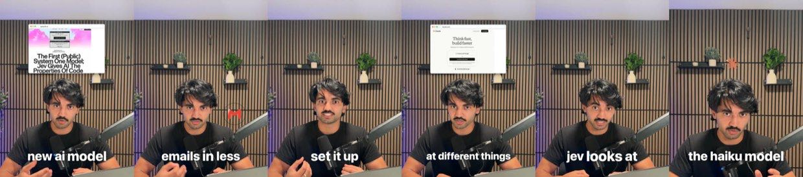
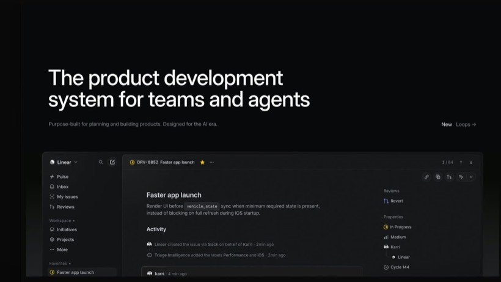
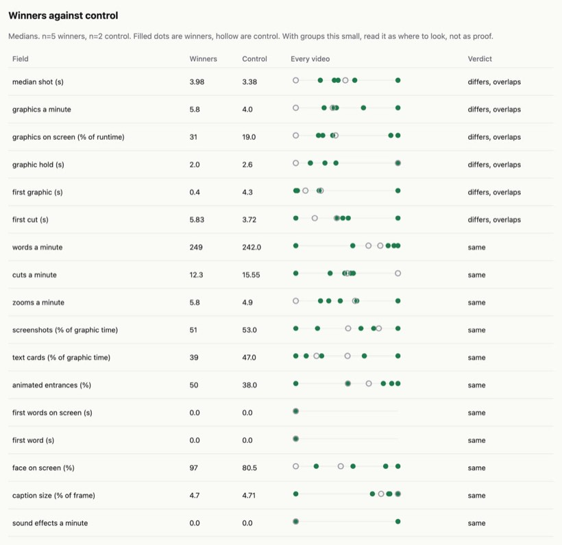

Talking head
Your video, your style
A clip plus 3–6 references. The edit you would have made, with the retakes gone.
Free and open source today. Hosted version in the works.
Give kembar your talking-head video and 3–6 videos you like. It measures their pace, zooms, captions, cards and sound, then edits yours that way.

Before
AfterHow it works
Nothing happens behind a paywall or a queue. You watch each decision and can send it back.
It removes retakes, false starts and dead air first. You see what was cut, word by word.
One creator or several. It measures pace, zooms, captions, cards, graphics and sound. The result is a style you reuse.
It plans captions and zooms down to the word. You approve the stills, then render.
What it makes
Each one starts from a different kind of input. None of them needs a timeline.
A clip plus 3–6 references. The edit you would have made, with the retakes gone.

Paste the URL. It asks what to show, records the real product, and cuts a launch film with its own music.

Paste a profile. You get the numbers behind their videos, such as pace, captions and structure, plus a style you can use on your own.
It also turns a long video or podcast into shorts. Paste the link and it finds the clips and edits each one.
Why it is different
Brand kits and templates give you one look for every video. kembar measures the videos you actually like and keeps the result as a style.
When a line names a product, it captures that product's page and puts its logo on the line that said it.
You approve the cut, the look and the render. If a caption or a card is wrong, you say so and only that part changes.
Free and MIT today, on Mac, Windows and Linux, inside Claude Code. The files stay on your machine.
The editor is free and open source. It runs on your computer and needs Claude Code plus a Claude account. That setup is the only thing between you and a video. The waitlist is for the hosted version, which is the same editor without the setup.
Early access
One email to confirm, one when the hosted version opens. We will not promise a date until there is one.
We use your address only to tell you when it opens, and nothing else. Unsubscribe any time.